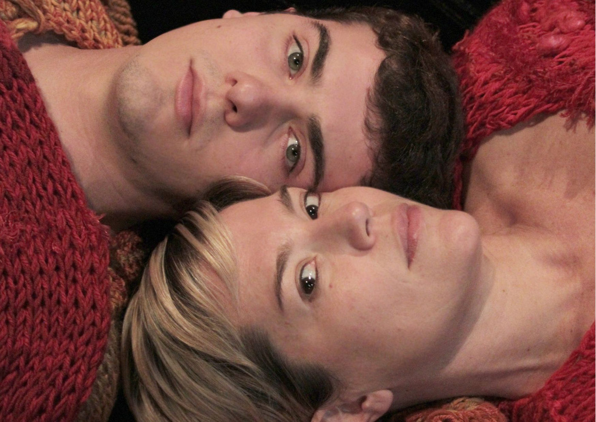

Foto — De Guilherme Scarpa
Teatro
"Ensaio Para Um Adeus Inesperado": Uma Reflexão Profunda Sobre Perda e Superação Estreia em Niterói
Idealizado pela renomada atriz Ana Beatriz Nogueira, "Ensaio Para Um Adeus Inesperado" marca a estreia emocionante da peça no Teatro da UFF em Niterói.…